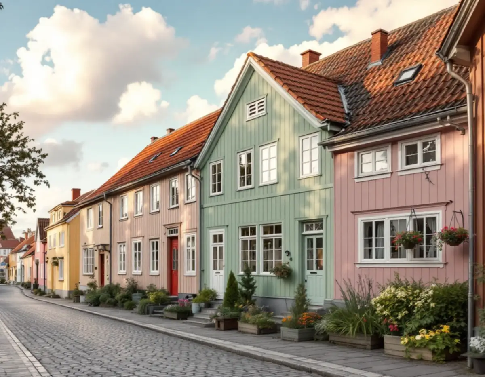
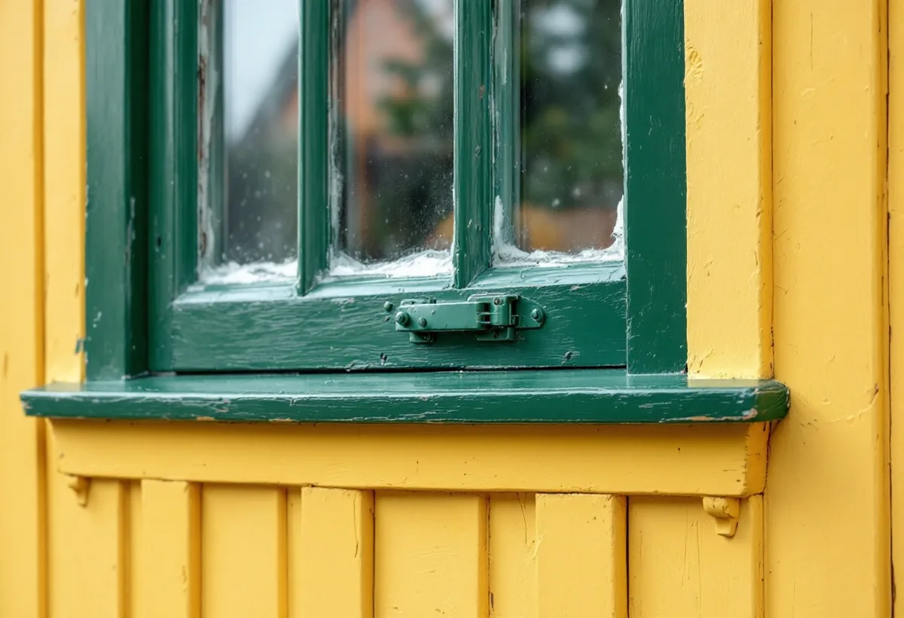

Platsbesök
Vi tittar på panel, puts, fönster och snickerier och gör skrapprov för att se färgtyp och äldre kulörer.
Få småstäder har sin färghistoria så noga beskriven som Sigtuna. Kommunens bevarande- och förnyelseplan går igenom stadens fasadkulörer från 1700-talet fram till i dag och ger råd om färgtyper för både gamla och yngre hus. Geal Entreprenad AB målar ute och inne i Sigtuna stad, Märsta och resten av kommunen, med gratis platsbesök och skriftligt kostnadsförslag.

Bevarande- och förnyelseplanen för Sigtuna stad antogs av kommunfullmäktige den 28 november 2019 och är enligt planen tungt vägledande för planarbete och bygglov. Kapitlet om färgsättning är hämtat från den tidigare planen från 1986, där arkitekten Peter von Knorring analyserade panelarkitekturens fasadfärger från 1850 till 1930. Underlaget bygger på provtagningar på ett tjugotal äldre fasader, brandförsäkringar och äldre målningar.
Planen beskriver Sigtuna under 1700-talet som en gul stad, med gult slamfärgade timmerväggar och oljemålade snickerier på de viktigare husen, medan den enklare bebyggelsen troligen var rödfärgad. Kring 1850–60-talet målades de nypanelade husen oftast med rödfärg. Omkring 1870 kom ljusa pastellfärger, rosa eller ljusgrönt, ofta med vita knutar, och vid sekelskiftet dominerade ljusgult och gröngrått.
Under 1920-talet slog en murrig färgskala igenom vid restaureringar, med olivgrönt, mörkgult och brunt och gröna eller bruna fönster, medan Malmen höll fast vid pastellerna. Sedan slutet av 1990-talet har man enligt planen ofta återskapat äldre husens kraftigare kulörer, gärna med olika färg på fasad, listverk och detaljer, och trefärgade fasader med kulörta fönsterbågar är vanliga.

Planen är tydlig: inom riksintresset för kulturmiljövården för Sigtuna stad gäller inte de bygglovsbefriade åtgärderna. Vid fasadförändringar som kulörbyte ska fastighetsägaren därför ansöka om bygglov. Planen påminner också om att ändringar ska utföras varsamt oavsett om en byggnad är särskilt värdefull eller inte, så att dess värden inte går förlorade.
Boverket räknar ommålning i samma kulör som underhåll, medan byte av färgtyp, till exempel från linoljefärg till plastfärg, kan bedömas påverka husets yttre karaktärsdrag. Planen råder till försiktighet med nya kulörer som helvitt, grått och svart i den historiska miljön, men skriver att de kan fungera utmärkt i ett nutida sammanhang.
Utanför stadskärnan finns andra underlag. På sin sida om att bygga i kulturmiljö skriver kommunen att även byggnader och områden som inte är utpekade i något program kan vara så värdefulla att särskild hänsyn behövs, och att dalgången Odensala–Hova har särskilda riktlinjer. Kommunen uppmanar den som är osäker att höra av sig.
Planen rekommenderar traditionella material och metoder för utvändig målning även på hus som byggdes så sent som på 1950-talet, till exempel slamfärg på ohyvlad panel på enklare byggnader och oljefärg på utsatta partier som fönster. Väljer man ändå en modern färgtyp rekommenderas att obehandlat trävirke grundas med traditionell linoljefärg, eftersom den tränger in bättre och ökar virkets livslängd.
Moderna färger kan ge traditionella kulörer, men planen påpekar att de åldras på ett främmande sätt och har en annan glans och struktur. För nya hus i stadskärnan anger riktlinjerna att hyvlade träfasader målas med täckande oljefärg, ohyvlade bräder med falu rödfärg och putsfasader med mineralisk färg utan organiska inslag som akrylharts. Vid ombyggnad ska ett hus som målats med falu rödfärg få behålla samma ytbehandling.
Tillgången är god. Planen skriver att det i dag finns provsamlingar med ett tjugotal traditionella pigment, att Riksantikvarieämbetet har tagit fram provsamlingar för linoljefärg och kalkfärg och att de traditionella kulörerna finns översatta till NCS-systemet. Linoljefärg säljs även i vanliga välsorterade måleributiker.
Om fönstren ger planen konkreta råd. Nya fönster ska vara trogna kopior av de befintliga, fönsterkittet ska vara övermålningsbart och även gångjärnen ska målas i fönstrens kulör. Ett gammalt fönster bör enligt planen i första hand repareras, och glasrutorna spelar en viktig roll för husets uttryck: de äldsta glasen är munblåsta med små blåsor, mellan 1915 och 1960 är de flesta glasen maskindragna, och sedan 1970-talet används floatglas som kan uppfattas som mörka hål i fasaden. Det är ett skäl att kitta om och behålla gamla rutor.
Märsta, Rosersberg och Steninge ligger utanför bevarandeplanens område, och där gäller i regel plan- och bygglagens lovfrihet för kulörbyte på en- och tvåbostadshus, så länge huset inte är särskilt värdefullt och detaljplanen inte säger annat. Där handlar uppdragen oftare om villor och radhus där panel, vindskivor och fönster målas om.
Ska taket ses över när ställningen ändå står uppe, läs mer under takläggare i Sigtuna. Inomhus målar vi väggar, tak, snickerier och dörrar och tapetserar i hela kommunen.
Vi tittar på panel, puts, fönster och snickerier och gör skrapprov för att se färgtyp och äldre kulörer.
Vi kontrollerar om huset ligger i riksintresset och vad bevarandeplanen säger, och om ny kulör kräver bygglov.
Färgtyp, kulör, förarbete och antal strykningar skrivs ut, så att förslaget kan bifogas en ansökan.
Tvätt, skrapning, lagning av trä, kittning med övermålningsbart kitt och grundning.
Strykningarna görs i lämpligt väder och med de torktider färgtypen kräver.
Vi går igenom resultatet tillsammans och noterar vilka färger som använts.
Skatteverket räknar målning av fasader, fönster, väggar, tak och element som rotarbete i ett småhus, medan målning av staket och murar inte ger avdrag. Avdraget är 30 procent av arbetskostnaden, högst 50 000 kr per person och år och högst 75 000 kr tillsammans med rutavdrag.
Du behöver äga huset när arbetet görs och bo i det, året runt eller som fritidsbostad. Färg och resor räknas inte. Geal drar avdraget direkt på fakturan.
I stadskärnan väger traditionella färgtyper, flerfärgade fasader och fönster som kittas om tungt, och en eventuell bygglovsansökan behöver räknas in i tidplanen. I Märsta och Rosersberg är det oftare panelens skick och husets storlek som styr. Platsbesöket är gratis och du får ett skriftligt kostnadsförslag.
Fasad, fönster och invändig målning.
Målare i Stockholm →Takbyte, takbesiktning och plåtarbeten.
Takläggare i Sigtuna →Sigtuna stad, Märsta och Arlanda.
Takrenovering i Sigtuna →Anmälan, fläkt och dusch i stället för badkar.
Badrumsrenovering i Sigtuna →Staket, dörrar och gårdshus i stad och dalgång.
Snickare i Sigtuna →